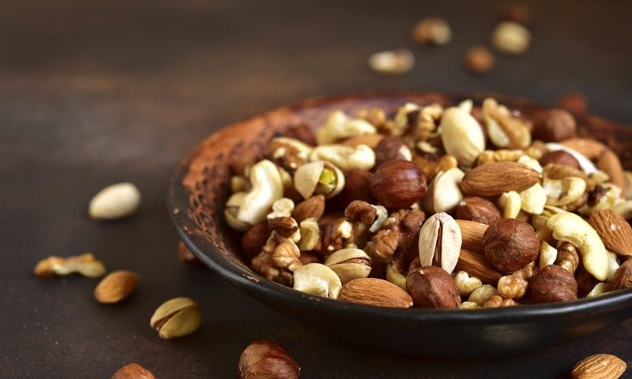

#1 – WHY Soak & Dehydrate Raw Nuts, Seeds, Grains
Have you ever eaten handfuls of nuts or seeds and wonder why it feels as though you dropped a brick in your stomach? This happens because nuts that have not been soaked contain enzyme inhibitors that can cause uncomfortable digestion. If you have experienced this, please keep reading!

Let’s talk about WHY & WHAT happens…
We are going to “geek” out just for a second here. Once you have spent some time in the raw food world, you will see two words heavily brought up; phytic acid and phytate.
- Phytic Acid – is a unique natural substance found in plants. It impairs the absorption of iron, zinc, and calcium and may promote mineral deficiencies (source). Therefore, it is often referred to as an anti-nutrient.
- Phytate – When phytic acid is bound to a mineral in the seed, it’s known as phytate.
It gets deeper… Phytate is the molecule that plants use to store phosphorus, and it is particularly high in nuts, edible seeds, beans/legumes, and grains. Most people equate phytic acid to just nuts and seeds, but it is actually found in a lot of other foods including roots, tubers, and other vegetables but usually in lower amounts.
So again, when phytic acid binds to a mineral in these foods, it’s known as phytate, and once digested, the phytate in raw nuts (as an example), cannot be digested by humans as we do not have the phytase enzyme. It then binds to minerals, particularly calcium, iron, and zinc, but also magnesium and manganese, preventing us from absorbing them in the gastrointestinal tract. Phytate has been described as an anti-nutrient for this reason. (source 1, 2). Diets high in phytate are thought to cause iron deficiency (source).
As well as binding to minerals, phytate is also thought to inhibit digestive enzymes such as pepsin, trypsin (4), and amylase. This is why large quantities of raw nuts can be hard to digest. So as you can see, soaking raw nuts, seeds, and grains is a crucial step, especially if you are eating a diet rich in them.
Who’s eating phytic acid?
WE ALL ARE! Everyone who eats plants, nuts, and seeds will consume some amount of phytic acid. It’s all a question of degree. If you eat a vegan diet, then it would be advised to include the soaking and dehydrating process of nuts, seeds, and grains to help reduce your intake. I will be sharing some other tactics below, so keep reading!
Who NEEDS to worry about Phytic Acid?
Whether you should worry about phytic acid wholly depends on how much you intake and the state of your health. If you eat a small handful of raw nuts and/or seeds every once in a while, it’s most likely not a big deal. But if you’re vegan and eating vast quantities of almond butter, cashew cheese, and raw (nut-based) desserts, you eat a vegetarian diet packed with lentils and whole grains; you will want to keep an eye on it.
If you have health issues such as you’re anemic or suffering from calcium or iron deficiency, then you may want to consider reducing your phytate intake. In both of these cases, it doesn’t mean that you have to cut them out; it just means learning how to prepare them differently will significantly reduce your intake.
How Can we REDUCE phytic acid?
- Eat a balanced diet of healthy whole foods.
- Soak and dehydrate raw nuts and seeds.
- Fermenting foods such as cabbage, carrots, and other vegetables can help to break down phytic acid.
- Sprouting seeds reduces phytic acid.
- Heating foods can destroy small amounts of phytic acid BUT can also destroy phytase and vitamin C.
- Milling grains and removing the bran decreases phytic acid. Unfortunately, milling also tends to remove many of the minerals.
- Consume vitamin C-rich foods with meals that contain phytic acid (guava, bell pepper, kiwi, oranges, grapefruit, strawberries, Brussels sprouts, cantaloupe, papaya, broccoli, sweet potato, pineapple, cauliflower, kale, lemon juice, and parsley)
- Use vinegar in salad dressings and cooking to enhance mineral absorption and offset phytic acid.
Are there Positive Health Effects of Phytic Acid?
Yep! Despite the bad rap they get, phytates are actually good for us. Research shows that phytic acid targets cancer through several pathways such as antioxidant, anti-inflammatory, and immune-enhancing activities. It has also shown to have positive effects on diabetes, heart disease, and kidney stone prevention as well as helping in the removal of toxic metals from the body.
The Important of Soaking
- To remove or reduce phytic acid.
- To remove or reduce tannins.
- To neutralize the enzyme inhibitors.
- To encourage the production of beneficial enzymes.
- To increase the amounts of vitamins, especially B vitamins.
- To make the proteins more readily available for absorption.
- To prevent mineral deficiencies and bone loss.
- To help neutralize toxins in the colon and keep the colon clean.
- To prevent many health diseases and conditions.
Basic Soaking and drying Instructions
Ingredients
- 4 cups seeds, nuts, grains (shelled)
- 1 Tbsp sea salt
Preparation
- Dissolve sea salt in freshwater, pour it over nuts or seeds, be sure to use enough water to cover them.
- You will need two times the amount of water as you have nuts in the bowl.
- Leave them in a warm location for the specified time, (indicated below). Select a clean cloth and lay it over the bowl as a cover which allows the contents of the bowl to breathe.
- Drain them in a colander and be sure to rinse them well.
- You can use this water to feed your plants or garden, so no need to waste it.
- Spread them out on your dehydrator sheets in a single layer and dry them at 145 degrees (F) for 1 hour, then reduce to 115 degrees (F) until they are thoroughly dry and crisp.
- Make sure they are completely dry. If not, they could mold, and won’t have that crunchy, yummy texture you expect from nuts and seeds.
- The dry time will vary due to the machine you own, the type of climate you live in, and how full your dehydrator is when drying them. Expect anywhere from 12 + hours.
 Culinary Explanations:
Culinary Explanations:
- Why do I start the dehydrator at 145 degrees (F)? Click (here) to learn the reason behind this.
- When working with fresh ingredients, it is important to taste test as you build a recipe. Learn why (here).
- Don’t own a dehydrator? Learn how to use your oven (here). I do, however honestly believe that it is a worthwhile investment. Click (here) to learn what I use.
Does soaking nuts and seeds affect the taste?
The answer is testing, do a little test study for yourself to see. You will see, especially in walnuts and almonds, they have a much more appealing taste after they are soaked and rinsed. In as little as 20 minutes, the soak water is brown. After a couple of hours, the dust, residue, and tannins from the skins are released into the water, and the nut emerges with a smoother, more palatable flavor.
You’ll notice that soaked walnuts do not have that astringent, mouth-puckering taste to them. This is because when soaking walnuts, the tannins are rinsed away, leaving behind a softer, more buttery nut.
The soak water from nuts and seeds should always be discarded and never used as water in a recipe. Be sure to really rinse the nuts well after soaking them.
Do soaked nuts and seeds have to be dehydrated?
If you are unable to dry your nuts or seeds, only soak an amount that you can be sure to use within two or three days. For convenience, I like to soak nuts and seeds in mason jars, rinse them after 12 hours, and then if I don’t have a chance to dry them, I store them in my refrigerator in water. It is important to rinse them twice a day with fresh water. You want to use these nuts within a few days because as with any live food, mold tends to set in within days if you’re not careful.
Walnuts:
- Now considered a “superfood,” walnuts are one of the nutritious nuts.
- They are high in alpha-linolenic acid and omega 3 fatty acids. Omega-3s help reduces the potential for heart disease, cancer, stroke, diabetes, high blood pressure, obesity, and clinical depression.
- Walnuts have also been shown to aid in lowering LDL cholesterol (the bad cholesterol) and the C-Reactive Protein (CRP). CRP was recently recognized as an independent marker and predictor of heart disease.
- These should be stored in the fridge or freezer due to their high-fat content.
- Substitutes: butternuts OR pecans (not as crunchy or flavorful) OR hazelnuts (not as rich) OR pine nuts (especially in pesto)
- Soak for 4-8 hours. Read more (here).
Almonds:
- High in protein, zinc, and calcium, almonds are also a great source of vitamin E magnesium, calcium, potassium, and iron.
- Another nut that can help reduce bad cholesterol.
- They are also a high plant-based protein that can double as a source of fiber.
- Substitutes: hazelnuts (for baking) OR Brazil nuts OR cashews OR pistachios (unsalted)
- Soak for 8-12 hours. Read more (here).
Brazil Nuts:
- Extremely high in selenium which is a powerful antioxidant. It also improves mood and mental performance.
- They are also high in minerals such as zinc, copper, iron, and magnesium.
- In addition to selenium, they contain excellent levels of other minerals such as copper, magnesium, manganese, potassium, calcium, iron, phosphorus, and zinc. Copper helps prevent anemia and bone weakness (osteoporosis).
- Manganese is an all-important co-factor for the antioxidant enzyme superoxide dismutase.
- Unshelled brazil nuts will keep in a cool, dry place for a few months. The best way to store them is to put them in air-seal bags and place them inside the refrigerator. This method will prevent them from turning rancid.
- Substitutes: macadamia nuts (use three times as many) OR paradise nut OR almonds OR pecans
- Soak 8-12 hours. Read more (here).
Cashews:
- They are a good source of potassium, B vitamin, folate, magnesium, phosphorus, selenium, and copper.
- Cashews are packed with soluble dietary fiber, vitamins, and minerals and packed with numerous health-promoting phytochemicals; that help to protect against diseases and cancers.
- Substitutes: peanuts (for making nut butter) OR pine nuts OR almonds OR pecans
- Soak 2-3 hours. Read more (here).
Pecans:
- Zinc, vitamin E, vitamin A are only a part of what these tasty nuts provide.
- They also have been proven to increase the results of a diet designed to lower cholesterol.
- They are packed with many important B-complex groups of vitamins such as riboflavin, niacin, thiamin, pantothenic acid, vitamin B-6, and folates. These vitamins function as co-factors for enzymes during cellular substrate metabolism.
- Substitutes: walnuts
- Soak 4-8 hours. Read more (here).
Hazel Nuts (also known as filberts):
- These nuts are rich in dietary fiber, vitamins, and minerals and packed with numerous health-promoting phytochemicals. Altogether, they help protect from diseases and cancers.
- Hazels are exceptionally rich in folate, which is a unique feature for nuts. 100 g fresh nuts contain 113 mcg. Folate is an essential vitamin that helps prevent megaloblastic anemia, nucleic acid synthesis, and most importantly, neural tube defects in the fetus. Good news for expectant mothers!
- Un-shelled hazels can be placed in a cool, dry place for years. Store shelled (without the outer coat) nuts inside airtight container and place in the refrigerator to avoid them turn rancid.
- Substitutes: beechnuts OR almonds OR walnuts OR pecans OR Brazil nuts OR macadamia nuts
- Soak 8-12 hours. Read more (here).
Pine Nuts:
- Suitable for your cardiovascular system, and filled with calcium, vitamins D, C and A.
- Pine nuts are an excellent source of the B-complex group of vitamins such as thiamin, riboflavin, niacin, pantothenic acid, vitamin B-6 (pyridoxine) and folates. These vitamins function as co-factors for enzymes during cellular substrate metabolism.
- Pine nuts can be useful for your eyes and immune system.
- Unshelled nuts have a long shelf life and can be stored for many months. Shelled kernels deteriorate soon if exposed to warm, humid conditions. Therefore, store shelled nuts in airtight jars and store them in the refrigerator.
- Substitutes: walnuts (this is a common variation in pesto) OR almonds (this is a common variation in pesto) OR hazelnuts (this also works in pesto) OR cashews (raw, unsalted) OR peanuts (unsalted) OR sunflower seeds.
- Soak 8 hours. Read more (here).
Macadamia Nuts:
- One of the few nuts that have palmitoleic acid, a monounsaturated fatty acid. It is said to help reduce stored body fat by increasing metabolism.
- They are also rich in omega 3′s and vitamin A, thiamine, riboflavin, niacin, and iron.
- These should be stored in the fridge or freezer due to their high-fat content.
- Substitutes: Brazil nut (stronger flavor, three times as large) OR pecans OR walnuts OR almonds OR cashews.
- Soak 8-12 hours. Read more (here).
Pistachios:
- Pistachios are a rich source of energy and contain many health benefiting nutrients, minerals, antioxidants, and vitamins that are essential for optimum health. These nuts are rich in monounsaturated fatty acids like oleic acid and an excellent source of antioxidants.
- Regular intake of pistachios in the diet help to lower total as well as LDL or “bad cholesterol” and increase HDL or “good cholesterol” levels in the blood. Research studies suggest that a Mediterranean diet that is rich in dietary fiber, monounsaturated fatty acids, and antioxidants help to prevent coronary artery disease and strokes by favoring healthy blood lipid profile.
- The nuts are packed with many important B-complex groups of vitamins such as riboflavin, niacin, thiamin, pantothenic acid, vitamin B-6, and folates.
- Unshelled or with shell pistachios can be placed in a cool, dry place for many months, whereas shelled (without the shell) kernels (nuts) should be placed inside an airtight container and kept in the refrigerator to avoid them turn rancid.
- Substitutes: pine nuts OR blanched almonds
- Soak 4-8 hours. Read more (here).
Pumpkin Seeds:
- The seeds contain good quality proteins. 100 g seeds provide 30 g or 54% of the recommended daily allowance.
- Pumpkin kernels are also an excellent source of the B-complex group of vitamins such as thiamin, riboflavin, niacin, pantothenic acid, vitamin B-6 (pyridoxine), and folates. These vitamins function as co-factors for enzymes during cellular substrate metabolism in the body. In addition, niacin helps reduces LDL-cholesterol levels in the blood. Along with glutamate, it enhances GABA activity inside the brain, which in turn helps reduce anxiety and neurosis.
- Whole un-hulled seeds store well for few months placed in a cool, dry place. However, hulled pumpkin kernels deteriorate soon if exposed to warm, humid conditions; therefore, should be placed in an air-seal container and stored in the refrigerator.
- Substitutes: squash seeds OR sesame seeds OR sunflower seeds.
- Soak 8 hours. Read more (here).
Sunflower Seeds:
- Delicious, nutty, and crunchy sunflower seeds are widely considered to be healthful foods. They are high in energy but also contain many health-benefiting nutrients, minerals, antioxidants, and vitamins that are essential for wellness.
- Good source of proteins with excellent quality amino acids such as tryptophan that is essential for growth, especially in children. Just 100 g of seeds provide about 21 g of protein (37% of daily recommended values).
- Sunflower kernels are one of the most excellent sources of the B-complex group of vitamins. They are excellent sources of B-complex vitamins such as niacin, folic acid, thiamin (vitamin B1), pyridoxine (vitamin B6), pantothenic acid, and riboflavin.
- Sunflower seeds are incredible sources of folic acid. 100 g of kernels contains 227 mcg of folic acid, which is about 37% of recommended daily intake. Folic acid is essential for DNA synthesis. When given to expectant mothers during the peri-conception period, it may prevent neural tube defects in the baby.
- At home, store whole seeds at room temperature in a bin or jar. However, sunflower kernels should be placed in an air-tight container and stored in the refrigerator.
- Substitutes: pumpkin seeds OR peanuts (for snacking) OR pine nuts.
- Soak 2 hours. Read more (here).
© AmieSue.com